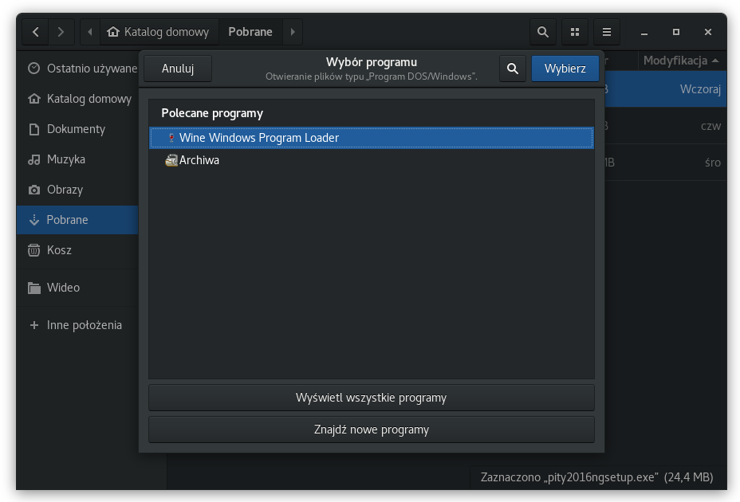
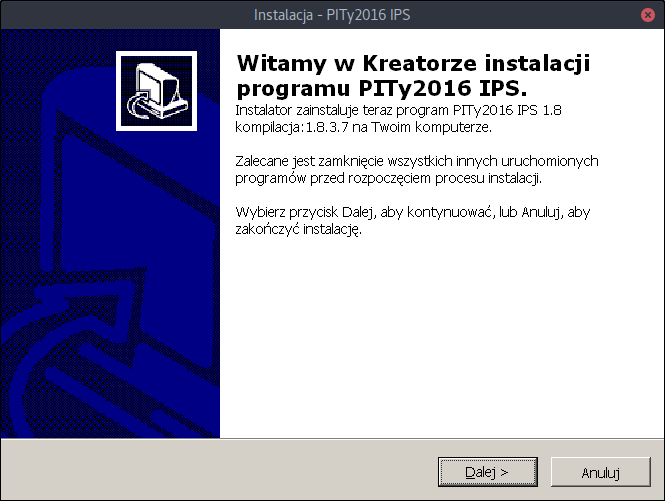
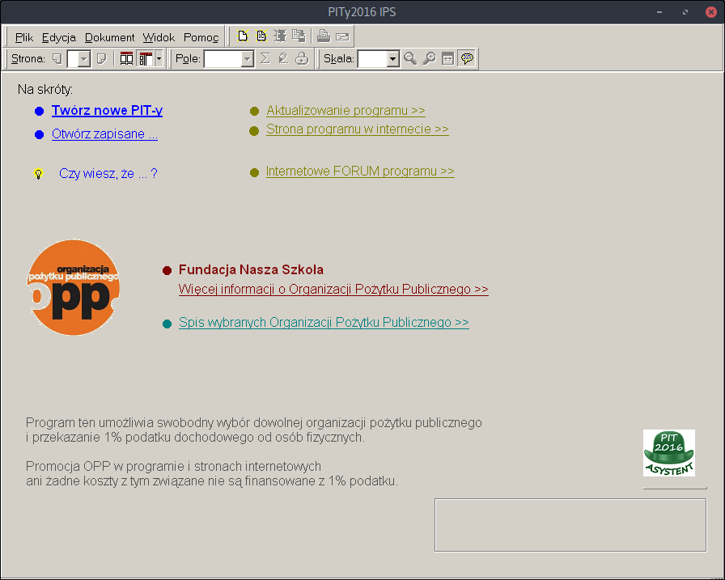

W pracy od kilku już lat pracuję w środowisku Linux. Mimo wszystkich wad Linuxa przyzwyczaiłem się i polubiłem go. Na magazynie używam Ubuntu 16.04. Ostatnio "z braku wolnego czasu" postanowiłem spróbować przejść na drugą stronę także w domu. Głównym komputerem żony jest telefon więc nie rzucała kłód pod nogi. Wybór padł na Fedorę 25. Dlaczego nie na Ubuntu to już opiszę w innym poście.
Pierwszy problem
Tak czy siak, tuż po instalacji przyszedł czas na pierwszy poważny sprawdzian -
wypełnienie PITa. Szybkie googlanie dało odpowiedź w postaci aplikacji
e-pity.py. Problem w tym, że
wymaga ona Adobe AIR i jeszcze kilku innych bibliotek. Postanowiłem rozejrzeć się
za inną opcją a konkretnie za programem używaym dotychczas na Windowsie od
firmy IPS. I rzeczywiście jest wersja PITY2016NG
ale tylko na "okienka". Postanowiłem spróbować odpalić ją za pomocą wine.
Instalacja
Polecenie
$ sudo dnf install wine
Zainstaluje wine oraz kilka niezbędnych dodatków. Następnie pobieramy instalator pogramu klikamy prawym przyciskiem mszki na nim i z menu "Otwórz za pomocą innego programu" wybieramy "Wine Windows Program Launcher".

Uruchomi się standardowy instalator windows gdzie klikamy po prostu dalej, dalej itd.

Po zakończonej instalacji program możemy znaleźć w Dashu jako PITy 2016.
Wyniki
Po odpaleniu programu bez problemu mogłem wypełnić PIT-37, wysłać na Testowy serwer Ministerstwa a także wysłać już finalną wersję pitu do rozliczenia.

Problemy
- Drukowanie do PDF tworzy PDF z pustymi stronami. Aby rozwiązać ten problem
należy zainstalować cups-pdf (
sudo dnf install cups-pdf) i aby utworzyć PDF wybrać "Plik" -> "Drukuj" -> a w profilu (w oknie ustawień drukowania) "Cups-PDF". - Wine przechwytuje
ALT+Tab, który przestaje działać w systemie. - Po wyłączeniu aplikacji jej ikonka dalej pozostaje w doku (mimo, że nie ma nawet procesu aplikacji).
Na szczęście główna funkcjonalność działa a z problemami można się jakoś przemęczyć ten jeden raz w roku.
Ubuntu
Okazuje się, że na Ubuntu 16.04 (kernel 4.8) zarówno drukowanie/eksport do PDF jak i wyłączenie
aplikacji oraz ALT+Tab działa bez problemów. Więc obstawiam, że głównym winowajcą na Fedorze jest
Wayland.